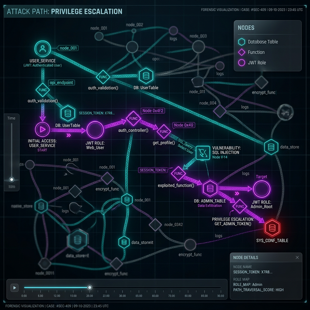

Forensic Verification of
PostgreSQL Tenant Isolation
For SaaS companies using Supabase or PostgreSQL with multi-tenant architectures.
Your RLS policies might look correct in the dashboard—until an attacker joins two tables. We provide the deterministic forensic proof that your isolation actually holds under adversarial conditions. Zero Production Access Required.
Is Your Architecture a Fit?
We work exclusively with high-stakes multi-tenant environments.
Who This Is For
- ✅ SaaS with multi-tenant architecture
- ✅ Teams preparing for SOC2 / ISO 27001
- ✅ Supabase or PostgreSQL stacks
- ✅ Handling sensitive customer data
- ✅ Seed–Series B companies
Who This Is NOT For
- ❌ Personal projects / Side hustles
- ❌ Single-tenant installations
- ❌ WordPress or Webflow sites
- ❌ Early MVPs without production users
- ❌ Teams expecting automated scanners
The "False Green" Paradox
Supabase says RLS is enabled. We prove it actually works.
Your "Green" Dashboard is Lying to You.
Traditional security scanners stop at the surface. They see ENABLE ROW LEVEL SECURITY and give you a green checkmark.
Our engine goes deeper. We reconstruct your entire schema in a secure sandbox and simulate thousands of adversarial mutation paths. We find the bridges your developers accidentally built between tenants.
See the Exploit Demo →Our Methodology
From zero-access intake to deterministic SQL hardening.
1. Schema Ingestion
Zero-access intake. We only require your schema.sql to reconstruct your database architecture in our isolated forensic sandbox.
2. Graph Construction
Our engine maps every possible tenant crossover point, traversing 10+ hops of views, functions, and cross-table relationships.
3. Mutation Stress-Test
Simulating 10,000+ unauthorized request permutations, covering every JWT claim falsification and tenant-ID hijacking vector.
4. Hardening Blueprint
You receive a clinical forensic report and the exact Remediation SQL required to mathematically guarantee isolation.
Audit Deliverables
What you receive after a forensic engagement
Isolation Verification Report
15-25 page technical report with findings, evidence, and risk ratings
RLS Policy Matrix
Complete verification of all policies against V001-V016 standard
Attack Path Graphs
Visual mapping of multi-hop privilege chains
SQL Remediation Patches
Ready-to-apply fixes for every finding
The Institutional Deliverable
Our audit reports provide the 'Technical Safeguard' documentation required for SOC2 Type II and ISO 27001 compliance.
16-Point Isolation Matrix
Every audit is measured against our frozen V001–V016 standard, providing a deterministic security signature for your compliance officers.
View Sample SummaryMulti-Hop Attack Graphs
Visualizing lateral movement. We map how an attacker could pivot through nested functions to reach sensitive data.

Illustrative attack graph generated by the Otobrix Isolation Engine against a synthetic schema.
Forensic-Grade Evidence
No vague findings. Every risk identified includes the exact file name, line number, and technical SQL proof required for remediation.
Download Sample Audit ReportIsolation Vulnerability Patterns
Illustrative scenarios based on real-world RLS misconfigurations identified and remediated by Otobrix Labs.
Fintech: Multi-Tenant Billing Leak
Supabase + RLS + Financial/Billing tables
A SECURITY DEFINER view exposed a transitive join chain, allowing tenant ID bypass.
public.products → join billing.subscriptions → bypass isolation boundary
Implementation of RLS Invariants + Virtual Schema Sandboxing.
SaaS: Metadata Search Hijacking
PostgreSQL + Custom JWT + GIN Indexing
Search functions executed with excessive schema privileges, enabling cross-tenant metadata extraction.
custom_search() → search_path manipulation → extraction of sys.tenants
Surgical search_path lockdown + Least Privilege Role Binding.
Open-Source Supabase SaaS Template Audit
Vulnerability
Transitive JOIN path bypassing RLS boundary
Systemic Impact
Unauthorized Cross-Tenant Data Access
Forensic Proof
organizations → roles → tenant_id_leak
Remediation
Injected RLS Invariant Policy Patch
| VULNERABILITY CLASS | SYSTEMIC IMPACT | REMEDIATION |
|---|---|---|
| RLS Bypass (Transitive View) | Critical Data Exposure | Strict RLS Policy Re-Anchoring |
| JWT Claim Hijacking | Impersonation Risk | Encapsulated Claim Validation |
| Security Definer Leaks | Privilege Escalation | Restricted Function Revocation |
Eliminating BOLA and Data Isolation Leaks in Multi-Tenant SaaS
The #1 security risk for multi-tenant SaaS. If your "Green" dashboard doesn't account for mutation logic, you are at risk of a data breach.
How we verify your isolation boundaries:
-
Cross-Tenant Pivot Discovery: Can User A
bypass RLS to delete User B's record via a
JOIN? - JWT Integrity Verification: Testing if falsified claims can hijack tenant isolation.
- Surgical Remediation: We don't just report bugs; we provide the exact SQL patches to close them.
Direct Forensic Attack Simulation
Unlike static scanners that check configurations, we spin up an isolated sandbox and execute real attacks using our specialist suite. Every finding is backed by a proven exploit map or a verified isolation certificate for your auditors.
- 10-Hop Transitive Privilege Tracing
- Multi-Tenant Mutation Testing (UPDATE/DELETE)
- JWT Integrity & Claim Tampering Proof
- Edge Function Logic & Webhook Forensic
- PII Exposure & Access Control Evidence
Audit Scope & Forensic Modules
Exhaustive verification powered by the Otobrix Forensic Suite
AI Logic Integrity
Detecting prompt injection, hardcoded keys, and rate limit flaws in AI-generated codebases.
Isolation Hardening
Deterministic verification of tenant boundaries via 10-hop privilege tracing.
PII/HIPAA Compliance
Forensic mapping of sensitive data exposure and validated access control remediation.
Webhook Security
Simulation of signature bypass, replay attacks, and financial logic exploitation.
SOC2 Safeguards
BOLA/IDOR verification and technical safeguard documentation for high-compliance environments.
From Schema to Verified Isolation in 7 Days
Rigorous multi-stage forensic testing for deterministic security.
Baseline Mapping
Schema extraction & isolation boundary metadata mapping
Mutation Engine
Exhaustive deterministic attack vectors in zero-knowledge sandbox
Forensic Analysis
Cross-tenant isolation matrix & liability impact reporting
Remediation
Delivery of RESTRICTIVE SQL patches with verified fixes
Security Engagement Pricing
Phase 1: Deterministic verification for early-stage SaaS teams.
Download a Sample Verification Report
Before you book, see the level of forensic detail we provide. No generic scans—just clinical SQL proofs and multi-hop attack paths.
Isolation Diagnostic
Low-friction entry to identify immediate BOLA risks.
- ✅ Schema & RLS Invariant Mapping
- ✅ BOLA / IDOR Exposure Check
- ✅ Tenant Boundary Validation
- ✅ Quick-Win Remediation Notes
- ✅ 5–8 Page Findings Report
- 📹 Asynchronous Video Walkthrough
- Note: This tier identifies and proves vulnerabilities exist. SQL fix patches are included in the $1,250 Forensic Audit.
Full Isolation Audit
Rigorous Multi-Stage Testing: Core verification & SQL hardening.
- ✅ Full Schema Relationship Mapping
- ✅ Join-Path Leak Detection
- ✅ RLS Policy Stress Testing
- ✅ Attack Path Reconstruction
- ✅ 15–25 Page Forensic Audit Report
- ✅ SQL Remediation Patches
- 🎥 15-Min Forensic Handover Session
Architecture Review
Deep boundary design & API pattern verification.
- ✅ Database Isolation Audit
- ✅ API Access Pattern Review
- ✅ Tenant Boundary Architecture Assessment
- ✅ Security Design Recommendations
- ✅ Architecture Review Report
- ✅ Supporting SOC2/ISO Evidence
- 🤝 2x 45-Min Strategic Design Consultations
Frequently Asked Questions
Common questions about our deterministic audit process
Q: What is a "Zero-Knowledge" schema audit?
A: We never access your production database or real user data. We only require your schema.sql to reconstruct your architecture in a secure, isolated sandbox for adversarial testing.
Q: How is this different from a standard pentest?
A: Standard pentests are time-boxed and broad. We are surgically focused on Data Isolation. We use proprietary graph-tracing to prove whether your RLS policies actually hold under complex, multi-hop join conditions.
Q: What deliverables do I receive?
A: You receive a forensic diagnostic report, a 16-point isolation matrix for your SOC2 auditors, and (in the full audit) the exact SQL remediation patches required to fix every identified leak.
Q: How long does an engagement take?
A: Diagnostics are delivered within 48 hours. Full Forensic Audits typically require 7 days from schema ingestion to final handover.
Ready to Verify Your Multi-Tenant Isolation?
No vague reports. No guesses. Just concrete findings and tested fixes.
Custom Forensic Engagements • 3-5 Day Rapid Turnaround • Institutional Governance Support